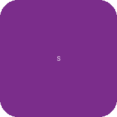
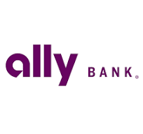

WiseIQ Editorial Team
Independent editorial — no lender writes our content · Updated March 2026
Last Updated: March 2026
Before accepting any loan offer, calculate the total cost of the loan (principal + all interest + fees). A lower monthly payment often means paying thousands more over the life of the loan.
Navigating the world of personal loans can be challenging, especially when you have no credit history. Many traditional lenders rely heavily on credit scores to assess risk, making it seem like an uphill battle for those just starting out. However, the good news is that obtaining a personal loan without a credit history is indeed possible. While it might require a bit more effort and a different approach, several lenders and financial products are designed to cater to individuals in this exact situation. The key is understanding how these lenders operate and what factors they consider beyond a conventional credit score.
Building credit takes time, and sometimes life presents financial needs that can\'t wait. Whether it\'s an unexpected expense, a necessary purchase, or consolidating debt, a personal loan can provide the funds you need. This guide will explore the avenues available for securing a personal loan with no credit history, highlight lenders that specialize in this area, and offer strategies to improve your financial standing for future borrowing.
When you lack a credit history, lenders can\'t pull a traditional credit report from agencies like Experian, Equifax, or TransUnion. This means they must look at alternative data points to gauge your creditworthiness. Understanding these factors can help you prepare a stronger application.
One of the most crucial factors for lenders is your ability to repay the loan. This is primarily assessed through your income and employment stability. Lenders will typically ask for proof of income, such as pay stubs, tax returns, or bank statements, to ensure you have a consistent and sufficient cash flow to cover monthly loan payments. A stable job history, even if short, can also be a positive indicator.
Your banking behavior can offer insights into your financial responsibility. Lenders may review your bank account statements to look for consistent deposits, a healthy balance, and a lack of overdrafts. A well-managed checking or savings account demonstrates financial prudence, even without a credit score.
Some innovative lenders use advanced algorithms that consider a broader range of data. This can include your educational background, area of study, and even certain public records. While less common, these factors can sometimes play a role in their lending decisions, especially for applicants with thin or no credit files.
A personal loan is not the right tool for every situation. Consider alternatives if any of the following apply to you:
See who actually approves your score range — and the APR to expect.
Upstart is a leading AI-lending platform that looks beyond traditional credit scores. They consider factors like education, employment, and income to assess creditworthiness, making them an excellent option for those with no credit history.
Why we recommend it: Upstart\'s unique underwriting model makes it accessible for individuals with limited or no credit history, focusing on future earning potential rather than past credit behavior.
Learn More →Avant offers personal loans to borrowers with fair to excellent credit, but they also consider applicants with limited credit history. Their streamlined online application and quick funding process are significant advantages.
Why we recommend it: Avant is known for its fast approval and funding, making it a good choice for those who need funds quickly and have a developing credit profile.
Learn More →OneMain Financial specializes in personal loans for borrowers with less-than-perfect credit or no credit history. They offer a personalized approach with local branches, allowing for in-person consultations.
Why we recommend it: Their willingness to work with borrowers who have no credit and the option for in-person support make them a strong contender for those who prefer a more personal touch.
Learn More →
Self Financial offers Credit Builder Loans designed specifically to help individuals establish or rebuild credit. Instead of receiving a lump sum upfront, you make monthly payments, which are reported to credit bureaus, and then receive the funds at the end of the loan term.
Why we recommend it: It\'s an excellent tool for those with no credit history to build a positive payment record, which is crucial for accessing better financial products in the future.
Learn More →
Credit unions are member-owned financial institutions known for offering more flexible lending criteria and often lower interest rates compared to traditional banks. They are more likely to work with individuals who have no credit history, especially if you\'re an existing member.
Why we recommend it: Credit unions often prioritize their members\' financial well-being and may be more willing to approve loans for those with no credit, especially if you have a history of responsible banking with them.
Find a Credit Union →| Lender | APR Range | Loan Amounts | Min Credit Score | Funding Time |
|---|---|---|---|---|
| UpstartOur Partner | 7.00% - 35.99% | $1,000 - $50,000 | None | 1 business day |
| Avant | 9.95% - 35.99% | $2,000 - $35,000 | 580 (flexible) | 1-2 business days |
| OneMain Financial | 18.00% - 35.99% | $1,500 - $20,000 | None | Same day (in-branch) |
| Self Financial | 15.92% - 17.13% | $525 - $3,100 | None | Upon completion |
| Local Credit Unions | Varies | Varies | None (relationship-based) | Varies |
If a personal loan isn\'t the right fit or you\'re looking for other ways to manage your finances, several alternatives can help you get access to funds or build credit without a traditional credit history.
A secured credit card requires a cash deposit, which typically becomes your credit limit. This deposit minimizes the risk for the issuer, making them easier to obtain for those with no credit. By using the card responsibly and making on-time payments, you can build a positive credit history.
Similar to Self Financial\'s offering, a credit builder loan is specifically designed to help you establish credit. The loan amount is held in a locked savings account while you make regular payments. Once the loan is paid off, you receive the funds, and your payment history is reported to credit bureaus.
If you have a trusted friend or family member with good credit, they might be willing to co-sign a loan for you. A co-signer\'s creditworthiness can help you qualify for a loan and potentially secure better terms. However, remember that the co-signer is equally responsible for the debt, so this option should be considered carefully.
Securing a personal loan when you have no credit history is a significant step, but it\'s also an opportunity to start building a strong credit profile. Here\'s how you can leverage your loan repayment to improve your credit:
This is the most critical factor in building a good credit score. Ensure you make every loan payment by the due date. Setting up automatic payments can help you avoid missing deadlines.
If you also have a secured credit card, try to keep your credit utilization ratio (the amount of credit you\'re using compared to your total available credit) below 30%. This demonstrates responsible credit management.
Regularly check your credit report for errors or inaccuracies. You can get a free copy of your credit report from each of the three major credit bureaus annually at AnnualCreditReport.com.
Once you\'ve established a positive payment history with your personal loan, consider adding other types of credit, such as a secured credit card or a small installment loan. A diverse credit mix can positively impact your score.
No credit history typically means you haven\'t used credit products like loans or credit cards before, or your credit accounts are very new. This results in no credit file or a very thin one, making it difficult for traditional lenders to assess your creditworthiness based on past behavior.
While challenging, it\'s not impossible. Lenders like Upstart consider income and employment stability heavily. You might also explore credit unions, which often have more flexible lending criteria and may be more willing to work with members who have a stable income but no credit history.
You\'ll typically need proof of identity (government-issued ID), proof of income (pay stubs, tax returns, bank statements), and proof of residence (utility bill, lease agreement). Some lenders might also ask for bank account statements to review your financial habits.
Most lenders perform a \'soft inquiry\' when you pre-qualify, which doesn\'t affect your credit score. However, if you proceed with a full application, they will likely conduct a \'hard inquiry,\' which can temporarily lower your score by a few points. This impact is usually minimal and short-lived.
Building a good credit history takes time and consistent responsible financial behavior. Generally, it can take anywhere from 6 months to a few years to establish a solid credit file that traditional lenders will recognize. Making on-time payments and keeping credit utilization low are key.
Some lenders may charge origination fees, late payment fees, or prepayment penalties. Always read the loan agreement carefully and ask the lender about all associated fees before signing. Reputable lenders will be transparent about their fee structure.
Financial Disclaimer: WiseIQ is not a financial advisor. Content is for informational purposes only and should not be considered financial advice. Always consult with a qualified financial professional before making any financial decisions.
WiseIQ's editorial team researches and fact-checks all content using primary sources. Our recommendations are based on independent analysis and are not influenced by advertiser relationships.
Last reviewed: April 2026 | How we rank products